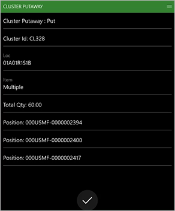

Clustereinlagerung
Important
Dynamics 365 for Finance and Operations hat sich zu speziell entwickelten Anwendungen entwickelt, mit denen Sie bestimmte Geschäftsfunktionen verwalten können. Weitere Informationen zu diesen Änderungen finden Sie im Dynamics 365-Lizenzierungshandbuch.
Einlagerungs-Cluster bieten eine Möglichkeit, mehrere Ladungsträger gleichzeitig zu entnehmen und diese dann an verschiedenen Lagerplätzen einzulagern. Dieser Prozess wird oft als Milchlauf bezeichnet. Clustereinlagerungen können sehr nützlich für Einzelhandelsgeschäfte sein, bei denen die Ladungsträger in der Regel keine vollen Paletten mit Bestand sind.
Schalten Sie die Funktion Clustereinlagerung ein
Bevor Sie diese Funktion nutzen können, muss sie auf Ihrem System aktiviert werden. Administratoren können mit der Einstellung Funktionsverwaltung den Status der Funktion überprüfen und ggf. aktivieren. Dort wird die Funktion folgendermaßen aufgelistet:
- Module: Lagerortverwaltung
- Funktionsname: Funktion Clustereinlagerung
Einrichten für das Beispielszenario
Clusterprofile
Das Clustereinlagerungs-Profil bestimmt, wohin ein Element geht, basierend auf dem Lagerplatz, der dem Element zum Zeitpunkt des Eingangs zugewiesen ist. Wenn verschiedene Cluster benötigt werden, sollten verschiedene Clustereinlagerungen erstellt werden, eine für jeden Menüpunkt des mobilen Geräts.
Gehen Sie zu Lagerortverwaltung > Einstellungen > Mobiles Gerät > Clusterprofile.
Wählen Sie im Aktivitätsbereich Neu aus.
Legen Sie in der Ansicht Kopfzeile die folgenden Werte fest:
- Clustereinlagerungsprofil-ID: Clustereinlagerung
- Name der Clustereinlagerungs-Profil-ID: Clustereinlagerung
- Typ der Clustereinlagerung: Einlagerung
- Sequenznummer: Akzeptieren Sie den Standardwert.
Wählen Sie Speichern, um die erforderlichen Felder auf dem Inforegister Allgemein verfügbar zu machen.
Legen Sie im Inforegister Allgemein die folgenden Werte fest:
Zeitpunkt der Cluster-Zuweisung: Beim Empfang
Dieses Feld legt fest, ob der eingelagerte Cluster sofort bei Eingang des Bestandes zugewiesen werden soll, oder ob er später sortiert werden soll.
Regel für Cluster-Zuweisung: Manuell
Dieses Feld legt fest, ob die Clusterzuordnung automatisch vom System oder manuell vom Benutzer bestimmt werden soll.
Richtliniencode: Lassen Sie dieses Feld leer.
Clustereinlagerung lokalisieren: Empfang
Folgende Werte sind verfügbar:
- Empfang - Ein Lagerplatz wird sofort beim Empfang gefunden.
- Cluster schließen - Ein Lagerplatz wird gefunden, wenn der Cluster geschlossen wird.
- Benutzergesteuert - Ein Lagerplatz wird gefunden, wenn der Ladungsträger zum Einlagern aus dem Cluster entnommen wird. In diesem Fall wird kein Lagerplatz angegeben, wenn das Einlagerungswerk erstellt wird. Beim Einlagern selbst muss der Benutzer den Ladungsträger oder die Arbeits-ID scannen, um den Einlagerungsschritt zu initiieren. Das System findet dann den Lagerplatz wieder und sagt dem Benutzer, wo er die entnommene Menge einlagern soll.
Clustereinlagerung pro Benutzer: Nein
Dieses Feld legt fest, ob jeder Cluster pro Benutzer eindeutig sein soll, wenn Cluster automatisch zugewiesen werden. Es ist nur verfügbar, wenn das Feld Cluster-Zuweisungsregel auf Automatisch festgelegt ist.
Einheitsbeschränkung: Lassen Sie dieses Feld leer.
Dieses Feld definiert die Einheit, die empfangen werden muss, damit das Profil gültig ist. Wenn es leer gelassen wird, sind alle Einheiten gültig.
Unterbrechung der Einheit: Einzelperson
Dieses Feld legt fest, ob beim Schließen eines Clusters der gesamte Bestand (unter Verwendung der Cluster-ID und des Kennzeichens) auf einen Ladungsträger konsolidiert werden soll und ob er als einzelner Ladungsträger oder getrennt auf den empfangenen Ladungsträgern eingelagert werden soll. Dieses Feld ist nicht verfügbar, wenn das Feld Clustereinlagerung einlagern auf Empfang festgelegt ist.
Cluster bleibt als übergeordneter Ladungsträger bestehen: Nein
Wenn diese Option auf Ja festgelegt ist, wird die Cluster-ID nach dem Einlagern zu einem übergeordneten Ladungsträger, und alle Elemente auf der Cluster-ID werden mit diesem übergeordneten Ladungsträger verknüpft.
Auf der Inforegister-Registerkarte Clustereinlagerung können Sie Kriterien für die Einlagerungssortierung definieren. Wählen Sie Neu in der Symbolleiste, um eine Zeile hinzuzufügen, und legen Sie dann die folgenden Werte fest:
Sequenznummer: Akzeptieren Sie den Standardwert.
Feldname: WMSLocationId
Dieses Feld definiert das Feld, das diese Zeile als Sortierkriterium verwenden soll.
Sortierung: Aufsteigend
Dieses Feld legt fest, ob die Sortierung in aufsteigender oder absteigender Reihenfolge erfolgen soll.
Wählen Sie auf dem Inforegister Cluster-Arbeitsvorlage die Option Neu in der Symbolleiste, um eine Zeile hinzuzufügen, und legen Sie dann die folgenden Werte fest:
- Arbeitsauftragstyp: Bestellungen
- Arbeitsvorlage: 61 PO Direct
Wählen Sie im Aktivitätsbereich Speichern und wählen Sie dann Abfrage bearbeiten.
Wählen Sie im Dialogfeld Clustereinlagerung auf der Registerkarte Bereich die Option Hinzufügen, um der Abfrage eine zweite Zeile hinzuzufügen. Aktualisieren Sie dann die Zeilen der Abfrage wie in der folgenden Tabelle gezeigt.
Tabelle Abgeleitete Tabelle Feld Kriterien Arbeit Arbeit Lagerort 61 Arbeit Arbeit Arbeitskennung Lassen Sie dieses Feld leer. Wählen Sie OK aus, um die Abfrage zu speichern und das Dialogfeld zu schließen.
Wählen Sie im Aktivitätsbereich Speichern, und schließen Sie die Seite.
Important
Felder im Clusterprofil, die abgeblendet erscheinen, wenn Cluster-ID generieren auf Ja festgelegt ist, sind nicht verfügbar und werden nicht berücksichtigt, wenn diese Funktion verwendet wird.
Menüelemente des mobilen Geräts
Für diese Funktion sind zwei neue Menüelemente für mobile Geräte verfügbar. Der Menüpunkt Cluster empfangen und sortieren wird verwendet, um den empfangenen Bestand beim Empfang in ein Cluster für die Einlagerung zu sortieren. Der Menüpunkt Clustereinlagerung dient zum Einlagern des Clusters, nachdem er zugewiesen worden ist.
Cluster empfangen und sortieren
Erstellen Sie einen neuen Menüpunkt für mobile Geräte, um Bestände zu empfangen und in einen Cluster zu sortieren. Dieses Element erstellt einen Eingang nach dem Empfang von Bestand, was bedeutet, dass der Menüpunkt Empfangen für das Einlagern von Clustern verwendet wird.
Note
Der Menüpunkt Cluster empfangen und sortieren kann mit den folgenden Empfangsmenüpunkten verwendet werden:
- Bestellposition – Empfang
- Bestellungsartikel – Empfang
- Artikelempfang aus Ladung
Gehen Sie zu Lagerortverwaltung > Einstellungen > Mobiles Gerät > Menüoptionen für mobiles Gerät.
Wählen Sie im Aktivitätsbereich Neu aus.
Legen Sie in der Ansicht Kopfzeile die folgenden Werte fest:
- Name des Menüelements: Cluster empfangen und sortieren
- Titel: Clusters empfangen und sortieren
- Modus: Arbeit
- Vorhandene Arbeit verwenden: Nein
Legen Sie im Inforegister Allgemein die folgenden Werte fest:
Arbeitserstellungsprozess: Empfang von Elementen der Einkaufsbestellung
Kennzeichen generieren: Ja
Clustereinlagerung zuweisen: Ja
Note
Die Option Clustereinlagerung zuweisen ist nur für die einstufige Aktivität Arbeitserstellungsprozess für den Empfang verfügbar.
Übernehmen Sie für alle verbleibenden Felder die Standardwerte.
Wählen Sie im Aktionsbereich Speichern aus.
Clustereinlagerung
Erstellen Sie ein neues Menüelement für das Einlagern des Clusters, nachdem es zugewiesen wurde.
Gehen Sie zu Lagerortverwaltung > Einstellungen > Mobiles Gerät > Menüoptionen für mobiles Gerät.
Wählen Sie im Aktivitätsbereich Neu aus.
Legen Sie in der Ansicht Kopfzeile die folgenden Werte fest:
- Name des Menüelements: Clustereinlagerung
- Titel: Clustereinlagerung
- Modus: Arbeit
- Vorhandene Arbeit verwenden: Ja
Legen Sie im Inforegister Allgemein das Feld Gerichtet durch auf Clustereinlagerung fest. Übernehmen Sie für alle verbleibenden Felder die Standardwerte.
Legen Sie auf dem Inforegister Arbeitsklassen die gültige Arbeitsklasse für diesen Menüpunkt für mobile Geräte fest:
- Arbeitsklassen-ID: Kauf
- Arbeitsauftragstyp: Bestellungen
Wählen Sie im Aktionsbereich Speichern aus.
Menü für mobiles Gerät
Fügen Sie die soeben erstellten Menüelemente in das Eingangsmenü der mobilen App ein.
Gehen Sie zu Lagerortverwaltung > Einstellungen > Mobiles Gerät > Menü für mobiles Gerät.
Wählen Sie im Aktionsbereich Bearbeiten aus.
Wählen Sie in der Menüliste Eingang.
Suchen Sie in der Liste Verfügbare Menüs und Menüpunkte den Eintrag Cluster empfangen und sortieren und wählen Sie ihn aus.
Wählen Sie die rechte Pfeil-Schaltfläche, um das ausgewählte Element in die Liste Menüstruktur zu verschieben.
Verwenden Sie die Pfeil-nach-oben- oder Pfeil-nach-unten-Schaltfläche, um das Element an die gewünschte Position im Menü zu verschieben.
Wählen Sie im Aktionsbereich Speichern aus.
Wiederholen Sie die Schritte 4 bis 7, um die restlichen Menüelemente hinzuzufügen:
- Cluster zuweisen
- Clustereinlagerung
Beispielszenario
Dieses Szenario simuliert die Clustereinlagerungs-Verarbeitung.
Eine Bestellung erstellen
Wechseln Sie zu Kreditorenkonten > Bestellungen > Alle Bestellungen.
Wählen Sie im Aktivitätsbereich Neu aus.
Legen Sie im Dialogfeld Bestellung erstellen die folgenden Werte fest:
- Kreditorenkonto: 1001
- Lagerort: 61
Wählen Sie OK.
Die Seite Alle Einkaufsbestellungen wird angezeigt.
Fügen Sie auf der Seite Alle Bestellungen auf dem Inforegister Bestellzeilen mit der Schaltfläche Zeile hinzufügen die folgenden Zeilen hinzu:
Einkaufsbestellung Zeile 1:
- Artikelnummer A001
- Menge 10
Einkaufsbestellung Zeile 2:
- Artikelnummer: A0002
- Menge 20
Einkaufsbestellung Zeile 3:
- Artikelnummer: M9215
- Menge 30
Wählen Sie im Aktionsbereich Speichern aus.
Notieren Sie sich die Bestellnummer.
Bestand empfangen und auf dem mobilen Gerät einlagern
Bestand empfangen und in ein Cluster einsortieren
Melden Sie sich bei der Lagerort App als ein Benutzer an, der für Lagerort 61 festgelegt ist.
Wählen Sie im Hauptmenü Eingang.
Wählen Sie im Menü Eingang die Option Cluster empfangen und sortieren.
Geben Sie im Feld Ponum die Nummer der Einkaufsbestellung ein.
Wählen Sie OK (die Schaltfläche mit dem Häkchen).
Wählen Sie das Feld Element, geben Sie die Positionsnummer A0001 ein und wählen Sie dann OK.
Wählen Sie das Feld Anzahl, geben Sie 10 mit Hilfe des Nummernblocks ein und wählen Sie dann die Schaltfläche mit dem Häkchen.
Auf der Aufgabenseite Anzahl wählen Sie OK (die Schaltfläche mit dem Häkchen), um die eingegebene Menge zu bestätigen.
Wählen Sie auf der Aufgabenseite Element OK, um zu bestätigen, dass das Element A0001 eingegeben wurde.
Wählen Sie das Feld Cluster-ID und geben Sie einen Wert ein, um eine ID für den Cluster zu vergeben, den Sie erstellen.
Die ID, die Sie hier eingeben, wird verwendet, wenn die beiden restlichen Elemente der Einkaufsbestellung eingehen.
Wählen Sie OK.
Die Aufgabenseite Ponum erscheint und zeigt die Meldung „Arbeit abgeschlossen“.
Element A0001 ist nun auf dem Lagerplatz RECV eingegangen und der Cluster-ID zugeordnet, die Sie in Schritt 10 eingegeben haben.
Wiederholen Sie die Schritte 4 bis 11, um die restlichen zwei Elemente aus der Einkaufsbestellung zu empfangen und der Cluster-ID zuzuordnen:
- Eine Menge von 20 für Element A0002
- Eine Menge von 30 für das Element M9215
Schließen des Clusters
Bevor die Elemente des Clusters eingelagert werden können, muss der Cluster geschlossen werden.
Gehen Sie im Supply Chain Management auf Lagerortverwaltung > Arbeit > Ausgang > Arbeits-Cluster.
Suchen Sie auf der Seite Arbeitscluster im Abschnitt Arbeitscluster im Feld Cluster-ID nach der Cluster-ID, die Sie zuvor eingegeben haben.
Wenn der Cluster nicht angezeigt wird, wurde er möglicherweise bereits geschlossen. Um festzustellen, ob der Cluster geschlossen wurde, aktivieren Sie das Kontrollkästchen Geschlossene Arbeiten anzeigen und suchen Sie nach der Cluster-ID, die Sie zuvor eingegeben haben. Folgen Sie dann diesen Schritten:
- Wenn der Cluster geschlossen wurde, überspringen Sie die restlichen Schritte dieser Prozedur und fahren Sie mit der nächsten Prozedur fort, Den Cluster einlagern.
- Wenn der Cluster nicht geschlossen wurde, folgen Sie den verbleibenden Schritten dieser Prozedur, um den Cluster manuell zu schließen. Fahren Sie dann mit der nächsten Prozedur fort.
Wählen Sie im Bereich Arbeitscluster die Cluster-ID, die Sie zuvor eingegeben haben.
Wählen Sie im Aktivitätsbereich Cluster schließen.
Nachdem der Cluster geschlossen wurde, wird er nicht mehr im Bereich Arbeitscluster angezeigt (es sei denn, das Kontrollkästchen Geschlossene Arbeit anzeigen ist aktiviert).
Einlagern des Clusters
Melden Sie sich bei der Lagerort App als ein Benutzer an, der für Lagerort 61 festgelegt ist.
Wählen Sie im Hauptmenü Eingang.
Wählen Sie im Menü Eingang die Option Clustereinlagerung.
Wählen Sie Cluster-ID, und geben Sie die Cluster-ID ein, die Sie zuvor für den geschlossenen Cluster eingegeben haben.
Wählen Sie OK.
Die Seite Clustereinlagerung: Entnehmen erscheint. Sie zeigt die Cluster-ID, den Lagerplatz, die Elemente (es wird der Wert Mehrfach angezeigt) und die Gesamtmenge im Cluster, die entnommen werden muss.
Wählen Sie OK.
Die Seite Clustereinlagerung: Einlagern erscheint. Die Anweisungen Einlagern identifizieren die Cluster-ID, den Lagerplatz, die Elemente, die Gesamtmenge und die Ladungsträger-IDs für die Elemente, die auf dem Cluster eingegangen sind.
Sie haben die Standardoptionen, um diesen Schritt zu überschreiben oder zu übergehen.

Wählen Sie OK, um die Clustereinlagerung zu bestätigen.
Es wird eine Meldung „Cluster abgeschlossen“ angezeigt.
Hinweise und Tipps
In Fällen, in denen die Cluster-ID zum übergeordneten Ladungsträger für eine verschachtelte Palette wird, wird die Einlagerungsposition automatisch angegeben, wenn die Cluster-ID gescannt wird. Es muss kein weiteres Ladungsträger-Kennzeichen gescannt werden, auch wenn die Kennzeichenerstellung auf manuell festgelegt ist.